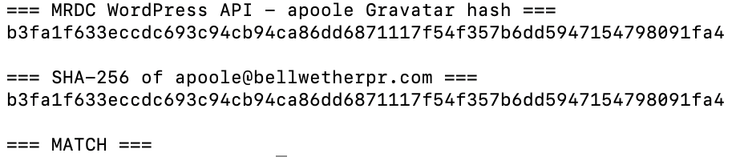
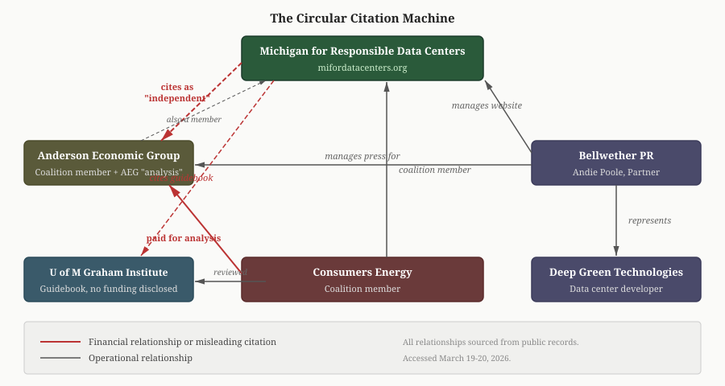

Michigan's New Data Center "Information" Coalition Has the Hallmarks of an Astroturf Campaign
LANSING, Mich. — Michigan for Responsible Data Centers, a 17-member coalition that launched March 19, says it is committed to providing "clear, accurate information about data centers" to Michigan communities. The website names no individuals and lists no contact information of any kind. Publicly available records show that a PR firm representing a data center developer manages the site's content, and that the economic research the coalition cites as independent was paid for by one of its own members.
A PR Firm Manages the Website
Publicly accessible metadata on the MRDC website identifies two user accounts. One belongs to a freelance web developer with no political or industry affiliations who built the site structure. The other, with the username apoole, authored all five blog posts and uploaded all 24 media files on the site, including stock photographs and a Consumers Energy document.
A digital fingerprint associated with the apoole account matches the email address apoole@bellwetherpr.com. Bellwether's team page lists Andie Poole, APR, as a Partner. Her email is apoole@bellwetherpr.com.

Poole is the sole content author on the site. The site's RSS feed and author sitemap both confirm this. The entire site was built in a single day, eight days after the domain was registered. Two of the five blog posts carry dates from 2025, before the domain existed. They are reposted articles from other publications, displayed under their original publication dates rather than the date they were added to the site.
The Same Firm Represents a Data Center Developer
Bellwether PR was retained by Deep Green Technologies for communications work related to the company's proposed data center in downtown Lansing, according to WKAR reporting from January 16, 2026. Bellwether partner Josh Hovey spoke at the November 5, 2025 Lansing Planning Commission meeting as Deep Green's PR representative.
The coalition's website does not mention Bellwether PR or its relationship with Deep Green Technologies.
The "Independent" Economic Analysis
MRDC's March 19 press release cites economic research by Anderson Economic Group (AEG), an East Lansing consulting firm. The research claims data center development could generate $121 million to $5.5 billion in construction economic output and 806 to 30,000 construction jobs.
Three facts about this research are not mentioned in the press release:
- The analysis was commissioned by Consumers Energy, which is itself an MRDC coalition member.
- The press contact listed on AEG's website for the data center analysis is Bridgette Bauer (
bbauer@bellwetherpr.com), a Public Affairs Manager at Bellwether PR. Bellwether manages the press for the research and manages the website that cites it. - Anderson Economic Group is listed as a client of Andie Poole on Bellwether's team page. AEG is also an MRDC coalition member.
To summarize: Consumers Energy paid for the research. Bellwether PR handles the research's press. Bellwether PR also manages the coalition website where the research is cited. And AEG, the firm that produced the research, is both a Bellwether client and a coalition member.

The University of Michigan Guidebook
MRDC launched simultaneously with a University of Michigan Graham Sustainability Institute publication titled "What Michigan Local Governments Should Know About Data Centers," authored by Sarah Mills, PhD, and research assistant Ann Wilkinson.
The guidebook's reviewers include Brandon Hofmeister of Consumers Energy and Daniel Mahoney of DTE Energy. Both Consumers Energy and DTE Energy are MRDC coalition members. The guidebook does not disclose its funding source.
The document was created using Canva, a design tool common in PR and marketing work, rather than academic publishing software. It was finished 11 days before the MRDC domain was registered, and released the same day as the coalition's press release.
What the Coalition Does Not Disclose
The MRDC website names 17 member organizations. It does not name any individuals. There is no staff page, no board of directors, no media contact, no phone number, and no physical address. The press release quotes three coalition members by name (Jim Holcomb of the Michigan Chamber, Randy Thelen of The Right Place, and Jeff Jaros of NTH Consultants) but does not identify a spokesperson or organizational contact for the coalition itself.
There is no Michigan entity registration for "Michigan for Responsible Data Centers" in the LARA business registry as of March 20, 2026. The coalition may operate under the legal umbrella of a member organization.
The domain was registered on February 17, 2026, and the entire website was built in a single day. By March 19, the coalition had 17 members, an economic analysis, a university guidebook, and a coordinated press release ready for simultaneous release.
Who Benefits
The coalition's 17 members include two electric utilities that would sell power to data centers (Consumers Energy and DTE Energy), six building trades unions whose members would construct them, four chambers of commerce, two economic development organizations, and two engineering and construction firms that would bid on the work. Every member stands to benefit financially from increased data center development in Michigan.
The MRDC website does not describe any of these financial interests. It describes the coalition as committed to providing "clear, accurate information."
Preliminary Findings: Governance Overlap
A preliminary review of publicly available board rosters and campaign finance records suggests additional connections between MRDC coalition members and the public officials who approve data center projects. This analysis is ongoing, and these findings should be understood as initial observations, not final conclusions.
LEAP's board of directors, published on its website, includes approximately 86 members. Among them:
- Andy Schor, Mayor of Lansing, who championed the Deep Green data center proposal that went before the Lansing City Council in late 2025
- Tim Daman, President and CEO of the Lansing Regional Chamber of Commerce, which is both an MRDC coalition member and the operator of the LRC-PAC (MiTN Committee 000516), a political action committee that has endorsed and funded Lansing City Council candidates
- Dick Peffley, General Manager of the Lansing Board of Water and Light, the municipal utility that would provide electricity to any data center built in the Lansing service area
- Jessica Tramontana, Community Affairs Manager at Consumers Energy, another MRDC coalition member and the company that commissioned the AEG economic analysis cited by the coalition
These four individuals serve together on the board of an MRDC coalition member. Overlapping board seats do not by themselves establish coordination, but the pattern is worth noting: the officials who approve data center projects, the utilities that would profit from them, and the organizations that fund council campaigns all share governance of the same economic development entity.
A more detailed analysis of coalition member financial relationships, political contributions, and governance connections is forthcoming.
Methodology
This analysis is based entirely on publicly accessible information: website metadata, publicly accessible data endpoints, corporate team pages, news reporting, document properties, domain registration records, and state business registry searches. All sources were accessed between March 19-20, 2026. Every factual claim can be independently verified using the links provided.